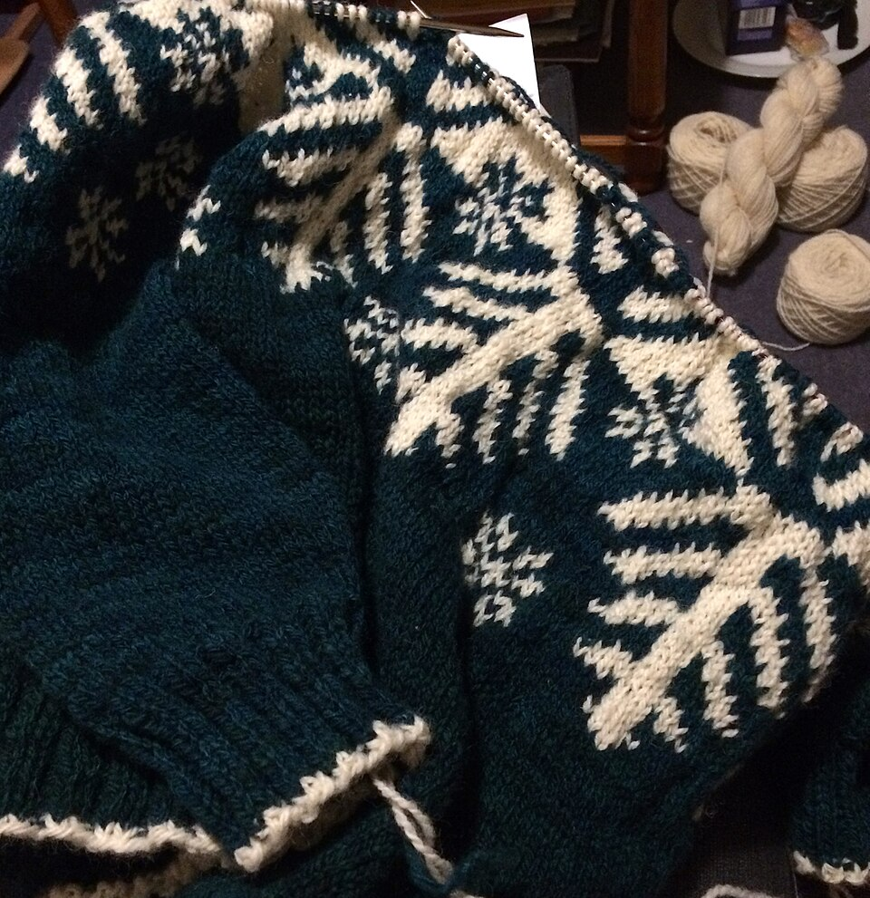
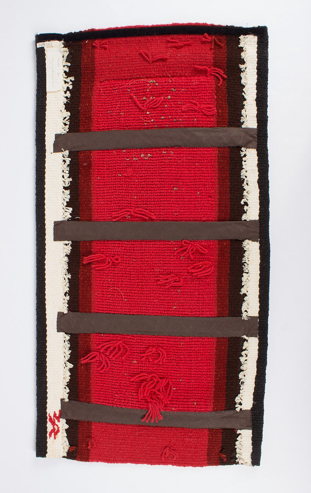
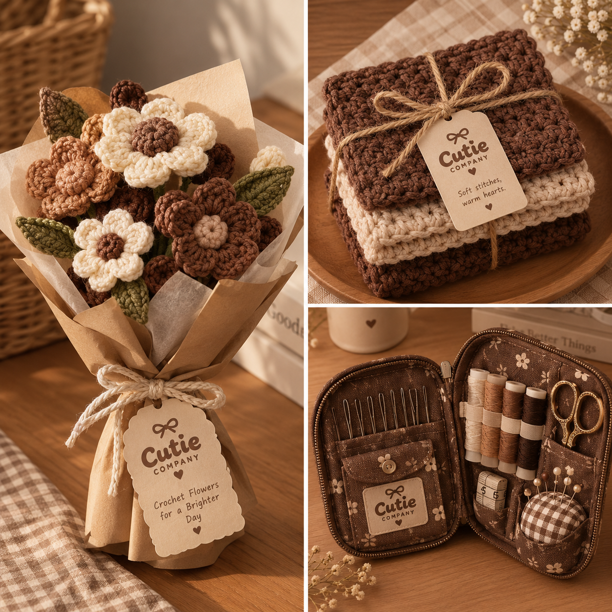
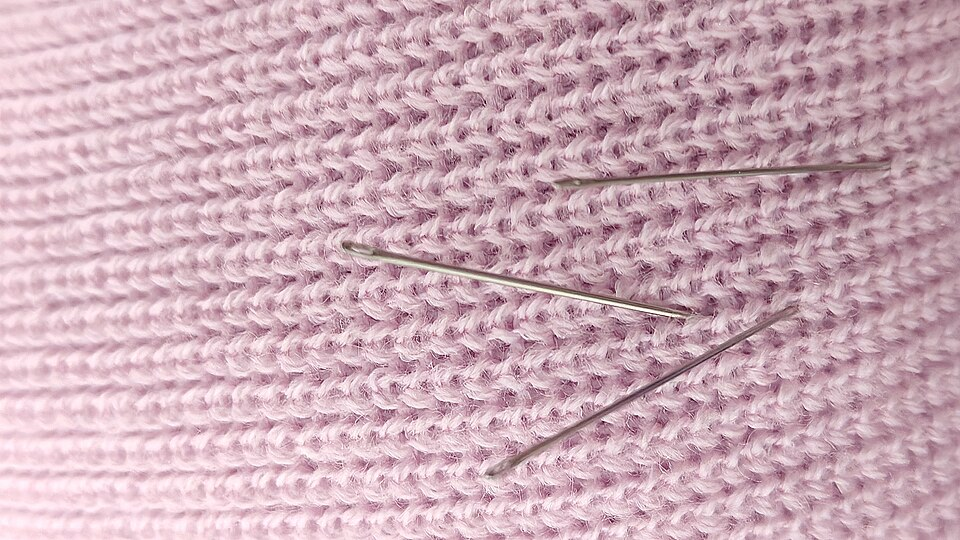
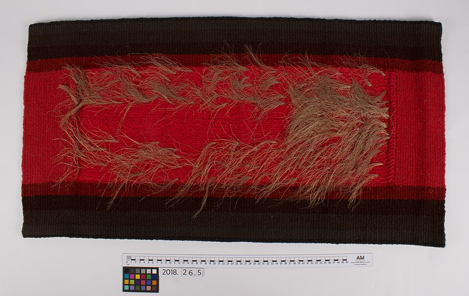
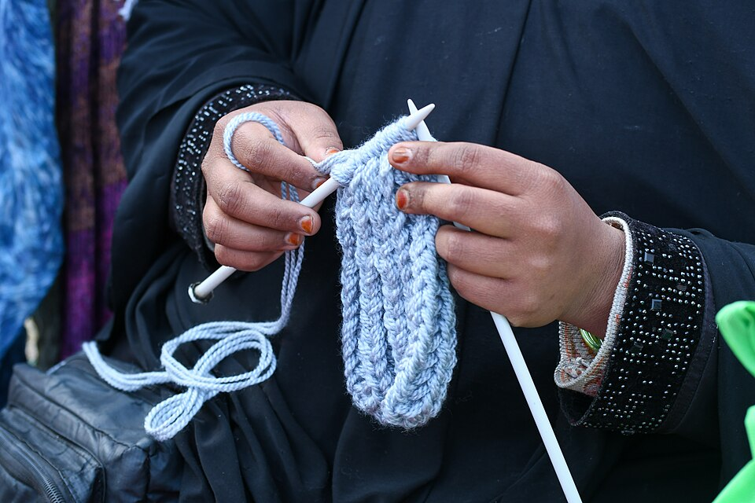

The Sunday scarf
Rosewood, oatmeal & a little bit of sunshine.
 Twist & TangleCROCHET STUDIO
Twist & TangleCROCHET STUDIOA LITTLE SOMETHING TO LOOK AT
A growing collection of one-of-a-kind pieces, made in our studio and sent off to good homes.

Rosewood, oatmeal & a little bit of sunshine.

Natural fibers for the slowest room in the house.

A little warmth for the newest little love.

Soft, uncomplicated, and entirely your own.

Textured, tactile, and made to catch the light.

A small, soft way to say “I was thinking of you.”
No pieces in this collection just yet. Try another filter.
Your saved pieces are kept for this browsing session.
LOVE SOMETHING, BUT WANT IT YOUR WAY?